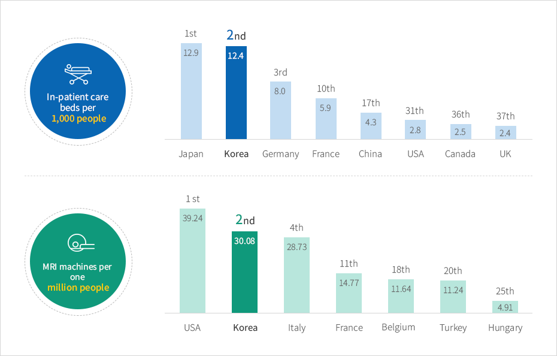
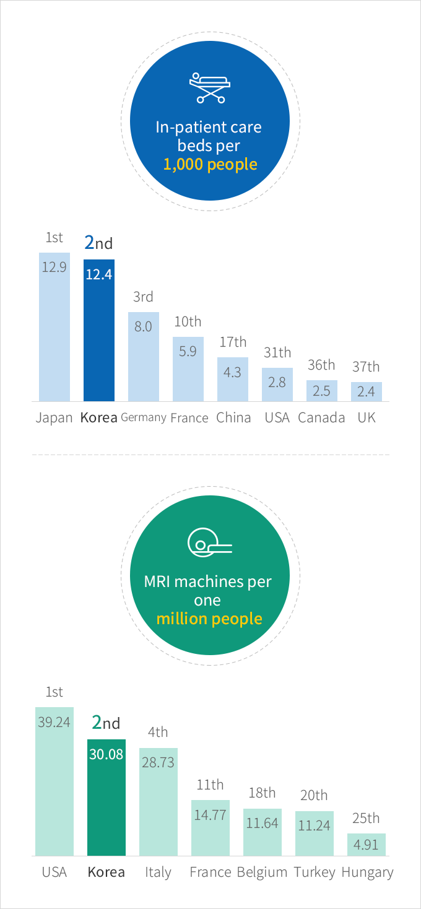

Healthcare
- Home
- Why KOREA
- Infrastructure
- Healthcare
A New Leap Forward as a Medical Hub
The number of hospital beds per capita in Korea stands at 12.4, the 2nd highest in the world.
Korea, equipped with world-class health care and medical services, has a vibrant ecosystem for medical and bio businesses.
Korea, equipped with world-class health care and medical services, has a vibrant ecosystem for medical and bio businesses.



In-patient care beds per 1,000 people : 1st Japan 12.9, 2nd place South Korea 12.4, 3rd place Germany 8.0, 10th place France 5.9, 17th place China 4.3, 31st place USA 2.8, 36th place Canada 2.5, 37th place UK 2.4
MRI machines per one million people : 1st place USA 39.24, 2nd place South Korea 30.08, 4th place Italy 28.73, 11th place France 14.77, 18th place Belgium 11.64, 20th place Turkey 11.24, 25th place Hungary 4.91

※ Source : OECD (2020)